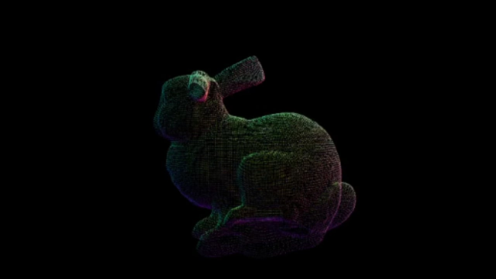
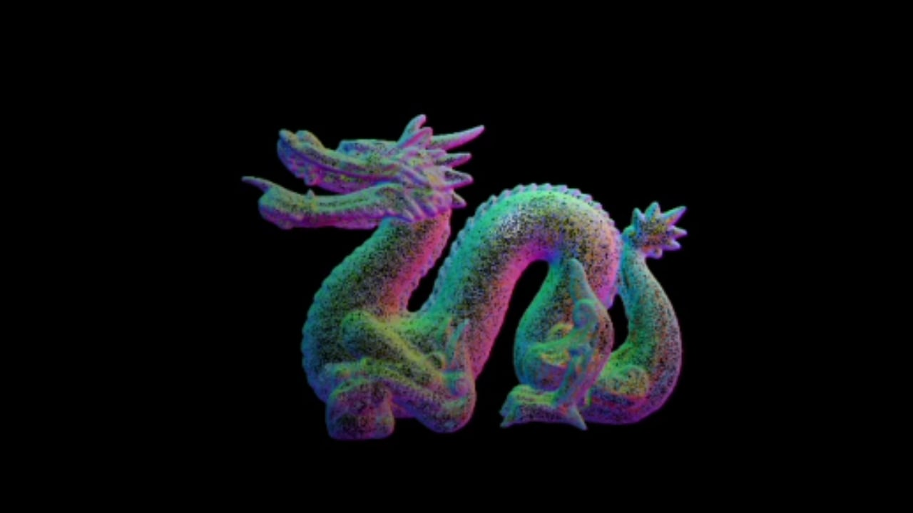
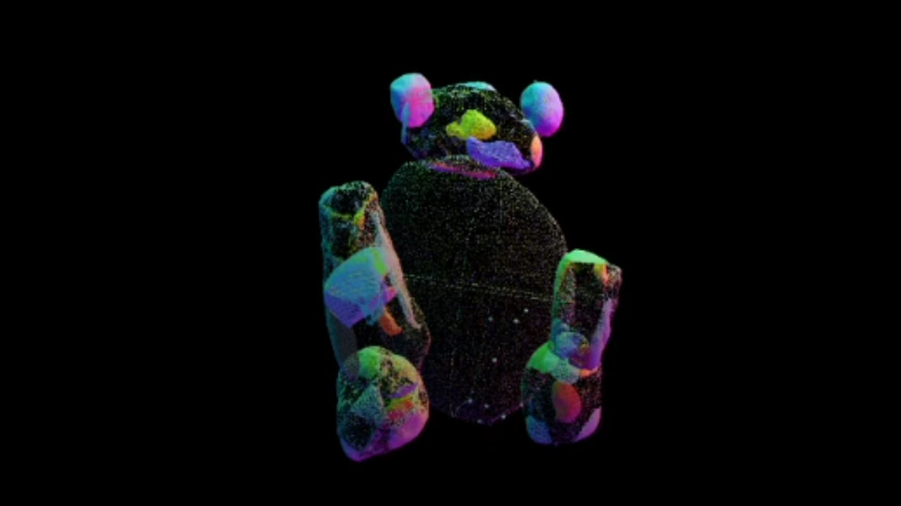
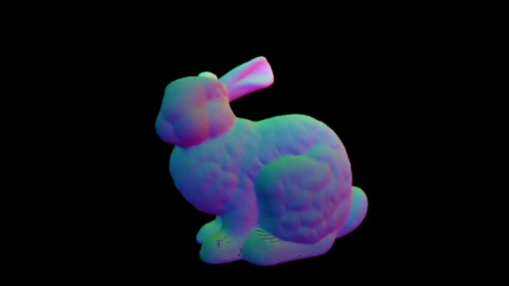

Rendering Point Clouds
C++ OpenGLThis project was the first solo assignment for UCSD's Introduction to Computer Graphics class. The purpose of this project was to become familiar with OpenGL by parsing .obj files and rendering the vertices onto the screen.




Goals for this Project:
Project Rubric and Directions- Parse 3D points from .obj files
- Display the points with normal coloring.
- Center and scale the models so they fit in the graphics window.
Keyboard Controls:
- F1: Render the point cloud for the bunny model
- F2: Render the point cloud for the dragon model
- F3: Render the point cloud for the bear model
- P/p: Adjust the size of the points